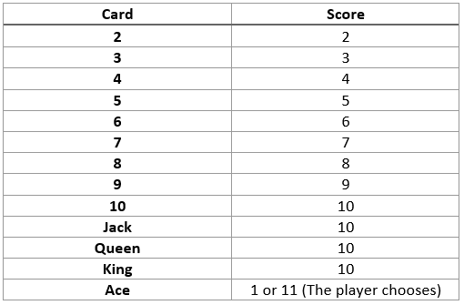

The aim of the game in Blackjack (also known as Twenty-One) is to draw cards with a total score as close to 21 as possible without going over and getting closer to it than the dealer. A score of 21 is called a Blackjack. The player bets on whether they will beat the dealer.
Each card is assigned a score value.
All of the cards in a player's hand are added up using these values to see how close it is to 21.
The players place their bets before the cards are dealt. When all are done, the dealer gives the forst card to the player on their left and so on. After all the players have their first card, the dealer gives on to themself. Then deals the players their second card, then dealing one to themself but face down.
If any players get an Ace and a card that scores 10 right off the bat, they have a Blackjack and the dealer pays out 2x their bet immediately.